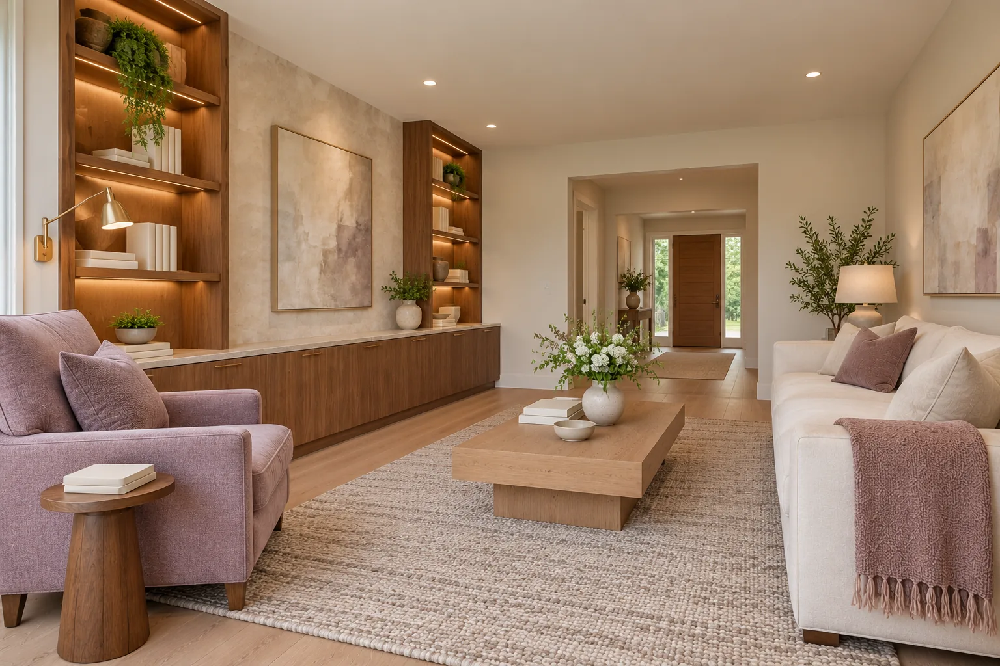

01 / RenovationAsk about this project
Interior Renovation
Living rooms, libraries and whole floors rebuilt with built-in cabinetry, new lighting and finishes that fit together cleanly.
Helpful to have ready
The rooms you want to change, how you use them, and photos of rooms you like.
What we’ll go over
Existing wiring and plumbing, structural changes, who handles the design, and finish choices.